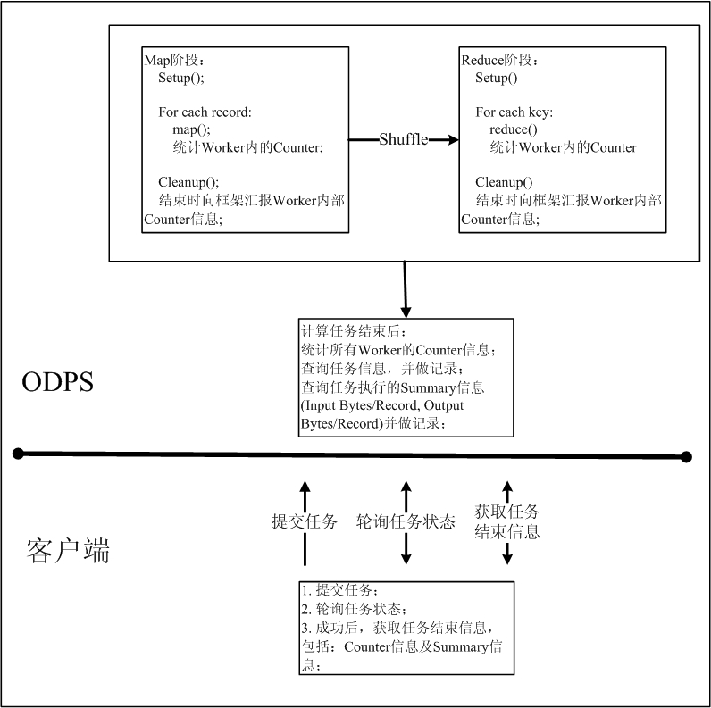

本章节将对ODPS MapReduce SDK的主要接口做简要介绍，不同版本的SDK在使用上有差别，准确信息以SDK Java Doc为准。下图将会简要介绍ODPS MapReduce的执行流程，各个接口在ODPS MapReduce中的哪个阶段被调用，方便用户理解本章节介绍的SDK接口：
Note
需要特殊说明的是：
在本小节，我们仅会对较为常用的MapReduce核心接口做简短介绍：
| 主要接口 | 描述 |
|---|---|
| MapperBase | 用户自定义的Map函数需要继承自此类。处理输入表的记录对 象，加工处理成键值对集合输出到Reduce阶段，或者不经过 Reduce阶段直接输出结果记录到结果表。不经过Reduce阶段而 直接输出计算结果的作业，也可称之为Map-Only作业。 |
| ReduceBase | 用户自定义的Reduce函数需要继承自此类。对与一个键(Key) 关联的一组数值集(Values)进行归约计算。 |
| TaskContext | 是MapperBase及ReduceBase多个成员函数的输入参数之一。 含有任务运行的上下文信息。 |
| JobClient | 用于提交和管理作业，提交方式包括阻塞(同步)方式及非阻塞 (异步)方式。 |
| RunningJob | 作业运行时对象，用于跟踪运行中的MapReduce作业实例。 |
| JobConf | 描述一个MapReduce任务的配置，通常在主程序(main函数)中 定义JobConf对象，然后通过JobClient提交作业给ODPS服务。 |
主要函数接口：
| 主要接口 | 描述 |
|---|---|
| void cleanup(TaskContext context) | 在Map阶段结束时，map方法之后调用。 |
|
map方法，处理输入表的记录。 |
| void setup(TaskContext context) | 在Map阶段开始时，map方法之前调用。 |
主要函数接口：
| 主要接口 | 描述 |
|---|---|
| void cleanup( TaskContext context) | 在Reduce阶段结束时，reduce方法之后调用。 |
|
reduce方法，处理输入表的记录。 |
| void setup( TaskContext context) | 在Reduce阶段开始时，reduce方法之前调用。 |
主要函数接口：
| 主要接口 | 描述 |
|---|---|
| TableInfo[] getOutputTableInfo() | 获取输出的表信息 |
| Record createOutputRecord() | 创建默认输出表的记录对象 |
| Record createOutputRecord(String label) | 创建给定label输出表的记录对象 |
| Record createMapOutputKeyRecord() | 创建Map输出Key的记录对象 |
| Record createMapOutputValueRecord() | 创建Map输出Value的记录对象 |
| void write(Record record) | 写记录到默认输出，用于Reduce端写出数据， 可以在Reduce端多次调用。 |
| void write(Record record, String label) | 写记录到给定标签输出，用于Reduce端写出数据。可以在 Reduce端多次调用。 |
| void write(Record key, Record value) | Map写记录到中间结果，可以在Map函数中多次调用。 可以在Map端多次调用。 |
|
读取文件类型资源 |
| Iterator<Record> readResourceTable(String resourceName) | 读取表类型资源 |
| Counter getCounter(Enum<?> name) | 获取给定名称的Counter对象 |
| Counter getCounter(String group, String name) | 获取给定组名和名称的Counter对象 |
| void progress() | 向MapReduce框架报告心跳信息。 如果用户方法处理时间 很长，且中间没有调用框架，可以调用这个方法避免task 超时，框架默认600秒超时。 |
主要函数接口：
| 主要接口 | 描述 |
|---|---|
| void setResources(String resourceNames) | 声明本作业使用的资源。只有声明的资源才能在运行 Mapper/Reducer时通过TaskContext对象读取。 |
| void setMapOutputKeySchema(Column[] schema) | 设置Mapper输出到Reducer的Key属性 |
| void setMapOutputValueSchema(Column[] schema) | 设置Mapper输出到Reducer的Value属性 |
| void setOutputKeySortColumns(String[] cols) | 设置Mapper输出到Reducer的Key排序列 |
| void setOutputGroupingColumns(String[] cols) | 设置Key分组列 |
| void setMapperClass(Class<? extends Mapper> theClass) | 设置作业的Mapper函数 |
| void setPartitionColumns(String[] cols) | 设置作业指定的分区列. 默认是Mapper输出Key的所有列 |
| void setReducerClass(Class<? extends Reducer> theClass) | 设置作业的Reducer |
| void setCombinerClass(Class<? extends Reducer> theClass) | 设置作业的combiner。在Map端运行，作用类似于单个Map 对本地的相同Key值做Reduce |
| void setSplitSize(long size) | 设置输入分片大小，单位 MB，默认640 |
| void setNumReduceTasks(int n) | 设置Reducer任务数，默认为Mapper任务数的1/4 |
| void setMemoryForMapTask(int mem) | 设置Mapper任务中单个Worker的内存大小，单位：MB， 默认值2048。 |
| void setMemoryForReduceTask(int mem) | 设置Reducer任务中单个Worker的内存大小，单位：MB， 默认值 2048。 |
| void setOutputSchema(Column[] schema, String label) | 设置指定label的输出属性。多路输出时，每一路输出对 应一个label。 |
Note
通常情况下，GroupingColumns包含在KeySortColumns中，KeySortColumns要包含在Key中。
主要函数接口：
| 主要接口 | 描述 |
|---|---|
| static RunningJob runJob(JobConf job) | 阻塞(同步)方式提交MapReduce作业后立即返回 |
| static RunningJob submitJob(JobConf job) | 非阻塞(异步)方式提交MapReduce作业后立即返回 |
主要函数接口：
| 主要接口 | 描述 |
|---|---|
| String getInstanceID() | 获取作业运行实例ID，用于查看运行日志和作业管理。 |
| boolean isComplete() | 查询作业是否结束。 |
| boolean isSuccessful() | 查询作业实例是否运行成功。 |
| void waitForCompletion() | 等待直至作业实例结束。一般使用于异步方式提交的作业。 |
| JobStatus getJobStatus() | 查询作业实例运行状态。 |
| void killJob() | 结束此作业。 |
| Counters getCounters() | 获取Conter信息。 |
ODPS提供的MapReduce与其他MapReduce框架提供的功能略有不同。本章节主要介绍ODPS Mapreduce与Hadoop MapReduce 0.19版本的区别。
| Hadoop MapReduce | ODPS MapReduce |
|---|---|
|
|
|
|
ODPS的Map/Reduce接口没有Reporter参数。Reporter参数在Hadoop中被用来实时更新Worker进度及统计信息等，但上述两种行为不受用户控制。目前，ODPS仅支持的进度汇报仅统计到Stage级别，不会统计Worker级别的进度。ODPS支持用户自定义统计信息，但统计信息的收集工作不是实时进行的，会在任务结束后进行统计信息的汇总。
ODPS的TaskContext接口中提供了progress功能，但此功能是防止Worker长时间运行未结束，被框架误认为超时而被杀的情况出现。这个接口更类似于向框架发送心跳信息，并不是用来汇报Worker进度。ODPS MapReduce默认Worker超时时间为10分钟(系统默认配置，不受用户控制)，如果超过10分钟，Worker仍然没有向框架发送心跳(调用progress接口)，框架会强制停止该Worker，MapReduce任务失败退出。因此，建议用户在Mapper/Reducer函数中，定期调用progress接口，防止框架认为Worker超时，误杀任务。
| Hadoop MapReduce | ODPS MapReduce |
|---|---|
| 用户可自定义类型，使用Hadoop实现的Writable 类型系统。 | 用户不可自定义类型， 使用ODPS的类型系统。 |
| Hadoop MapReduce | ODPS MapReduce | 描述 |
|---|---|---|
| mapreduce.job.skiprecords | 不支持 | 越过输入开头的记录 |
| mapreduce.map.maxattempts mapreduce.reduce.maxattempts | 支持此功能，但不接受用户配置 | Map/Reduce的最大重试次数 |
| mapreduce.job.output.key.class mapreduce.job.output.value.class | odps.mapred.mapoutput.key.schema odps.mapred.mapoutput.value.schema | ODPS不支持自定义输出Key， Value类型。 |
| mapreduce.job.output.key.comparator.class | odps.mapred.output.key.sort.columns | 自定义比较器 |
| mapreduce.job.output.group.comparator.class | odps.mapred.output.group.columns | 自定义group比较器 |
| mapreduce.job.cache.files | odps.mapred.resources | 指定读取的资源 |
| mapreduce.task.io.sort.factor mapreduce.task.io.sort.mb mapreduce.reduce.shuffle.parallelcopies | 不支持 | 性能优化参数配置 |
| mapreduce.task.id | SDK中提供接口获取 | 获取WorkerID |
| mapreduce.job.partitioner.class | odps.mapred.partition.columns | 自定义Partition |
Hadoop支持用户自定义输出Key、Value类型，自定义比较器及Partitioner。由于ODPS的数据均以表格式存储，即用户无法直接操作分布式文件存储系统，因此，在ODPS MapReduce中，用户仅可以指定输出Key，Value类型，用来排序的列及Partition列。由于ODPS的分布式计算实现不同于Hadoop，因此Hadoop支持的性能优化参数在ODPS中也无法使用。
| 功能描述 | Hadoop MapReduce | ODPS MapReduce |
|---|---|---|
| 多路输入 | 支持多路输入。但输入的表格式必须相同 。且ODPS无法区分输入Record来自于哪张 输入表 | |
| 多路输出 | 支持多路输出。每一路输出使用label区分 。输出表的格式可以不相同。 | |
| 任务进度汇报 | Map通过计算数据的读入量，Reduce通过不同phase 的进度估计任务总体进度。客户端可实时获取当前 进度。不受用户控制。 | 支持任务进度实时汇报。但实现方式不同 。 |
| 统计信息 | 允许用户自定义统计信息，并进行实施汇总更新。 信息实时更新行为不受用户控制。 | 不支持运行时更新统计信息。在任务结束 时，统一进行计算汇总。 |
| 文件压缩 | 支持指定是否进行压缩存储。 | 不支持。ODPS中用户无法直接操作文件 存储。 |
| 推测执行 | 默认开启，不可设置。 | |
| 任务结束通知 | 当任务结束时，服务端会通知客户端。 | 不支持。因此用户在使用SDK提交任务时， 只能不断轮询任务状态，直到任务结束。 |
{kind=link}